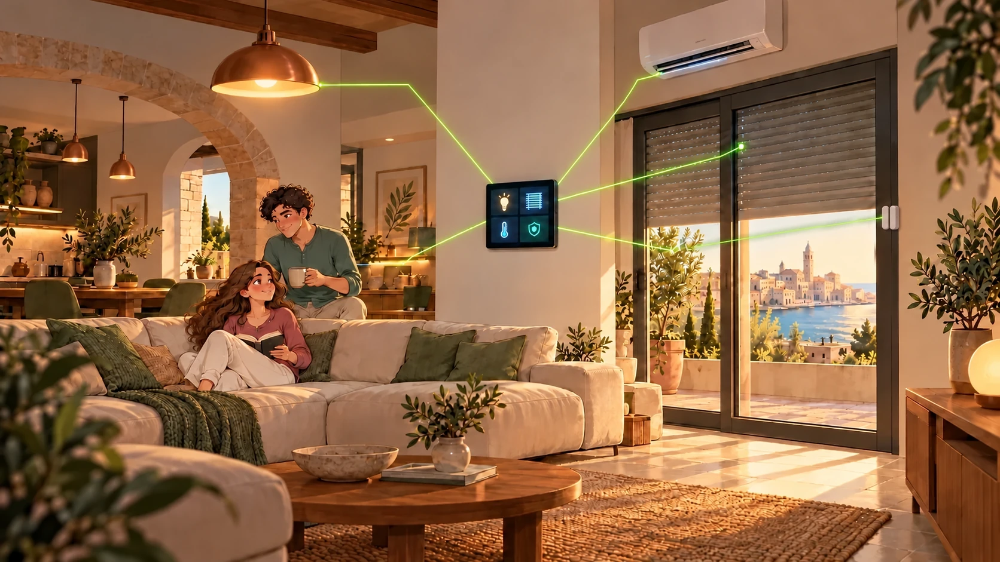
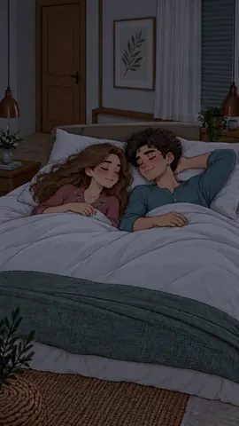
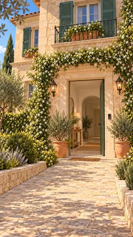
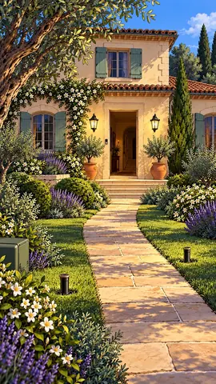
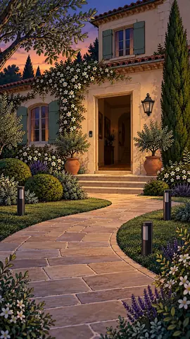
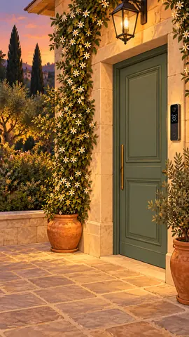
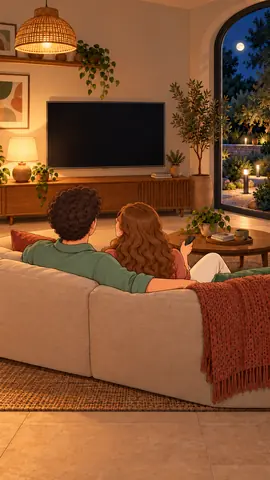

Le nostre soluzioni:
Coordiniamo i dispositivi della tua casa facendo interagire orari, sensori e comandi. Ogni configurazione è realizzata su misura per gli ambienti, l’impianto e le abitudini di chi li utilizza. Qui sotto trovi otto esempi di possibili applicazioni della domotica che seguono la giornata di una coppia, dal risveglio al riposo.
Sveglia con apertura graduale delle tapparelle.


Una sveglia graduale può rendere più piacevole il risveglio: le tapparelle si aprono progressivamente all’orario scelto. Il calendario riconosce i fine settimana e le festività nazionali e può sospendere automaticamente la routine nei giorni in cui non serve.
- Aperture programmateImpostare orario, gradualità e posizione finale delle tapparelle per ciascun ambiente.
Configurazione possibileAlle 7:00 la tapparella della camera si apre gradualmente; nei fine settimana e nei giorni festivi la routine resta disattivata.
ApprofondisciAntifurto smart con attivazione e disattivazione automatica.

Proponiamo un sistema antifurto che può attivarsi quando gli occupanti escono e disattivarsi al loro rientro. La geolocalizzazione dei telefoni autorizzati concorre alle condizioni configurate; in caso di evento, il sistema invia notifiche e, se sono presenti telecamere integrate, immagini degli ambienti interessati.
- GeolocalizzazioneLa posizione dei telefoni autorizzati aiuta a stabilire quando attivare o disattivare l’antifurto, insieme alle altre condizioni impostate.
- Sensori smart e telecamere AISensori e telecamere compatibili con il riconoscimento AI possono distinguere persone e animali domestici, riducendo gli avvisi non pertinenti e inviando immagini degli eventi rilevati.
Configurazione possibileQuando la coppia esce e si allontana, il sistema verifica le condizioni configurate e inserisce l’antifurto. Al rientro di un telefono autorizzato può avviare la disattivazione.
ApprofondisciIrrigazione smart: durata variabile in base al meteo passato e previsto.

L’irrigazione tiene conto delle piogge recenti e delle previsioni per i giorni successivi. In base ai dati disponibili e alle soglie configurate, regola o sospende la durata dei cicli per le diverse zone.
- Dati meteoConsiderare le precipitazioni già registrate e quelle previste per evitare irrigazioni non necessarie.
- Durata per zonaRegolare separatamente prato, aiuole e piante in base alle loro esigenze.
Configurazione possibileDopo una pioggia recente e con nuove precipitazioni previste, il ciclo del prato passa da 8 a 3 minuti, secondo le soglie configurate.
ApprofondisciClimatizzazione intelligente: Automazioni basate sulla posizione.
Configuriamo il clima perché si avvii quando ti avvicini a casa, tenendo conto della posizione dei telefoni autorizzati e di chi è già presente. L’ambiente inizia a raggiungere la temperatura desiderata prima dell’arrivo, senza climatizzare per tutta la giornata.
- Rientro rilevatoUn’area geografica impostata intorno a casa contribuisce ad avviare lo scenario al momento giusto.
- Zone indipendentiTemperature e programmi possono essere diversi per ogni ambiente, se l’impianto lo consente.
- Finestre e assenzaIl sistema può ridurre o interrompere il clima quando una finestra è aperta o la casa è vuota.
Configurazione possibileQuando la coppia si avvicina a casa, il climatizzatore si avvia con un’impostazione di 23 °C. Il tempo necessario per raggiungerla dipende dall’ambiente e dall’impianto.
ApprofondisciLuci esterne smart: si accendono al crepuscolo.

Le luci esterne seguono l’orario reale del crepuscolo, che cambia durante l’anno. Possiamo accendere ingresso e vialetto quando serve e ridurre l’illuminazione del giardino più tardi, senza reimpostare un timer a ogni stagione.
- Orario stagionaleL’accensione può anticipare o seguire di pochi minuti il crepuscolo calcolato.
- Aree separateVialetto, ingresso e giardino possono avere orari e intensità differenti.
- Luce notturnaNelle ore più tarde restano attivi solo i punti luce utili, con intensità ridotta.
Configurazione possibileAl crepuscolo si accendono vialetto e ingresso. Più tardi il giardino passa a un livello di luce ridotto.
ApprofondisciAccesso smart: la casa riconosce chi rientra.

Colleghiamo la serratura a metodi di accesso compatibili, come riconoscimento del volto, telefono, codice o badge. Quando entra una persona autorizzata, la casa può disattivare l’antifurto e accendere le luci dell’ingresso.
Configurazione possibileIl lettore verifica il volto autorizzato e sblocca la serratura. Dopo l’ingresso, l’antifurto può disattivarsi e le luci possono accendersi.
ApprofondisciScenario TV: la luce si adatta alla visione.

Quando avvii la TV, uno scenario può abbassare le luci e lasciare acceso un punto luce di passaggio. Il livello viene scelto in base alla stanza per ridurre i riflessi senza lasciare il soggiorno al buio.
Configurazione possibileAll’accensione della TV, le luci principali passano al 18% e resta acceso il punto luce scelto per muoversi nel soggiorno.
ApprofondisciLuci notturne: si spengono dove non c’è più nessuno.
I sensori rilevano quando soggiorno e corridoio non sono più occupati e spengono le luci dopo un tempo di attesa configurato. Di notte, il passaggio può attivare una luce tenue solo dove serve.
- Spegnimento automaticoLe luci si spengono dopo l’intervallo scelto dall’ultima presenza rilevata.
- Passaggi notturniUna luce discreta accompagna il passaggio senza illuminare tutta la casa.
Configurazione possibileQuando la coppia va a letto, soggiorno e corridoio si spengono dopo il tempo impostato. Un passaggio successivo accende solo la luce tenue del corridoio.
ApprofondisciUna casa che funziona
come serve a te.
Raccontaci gli ambienti, le abitudini e le automazioni che vorresti. Partiamo dalle tue esigenze.